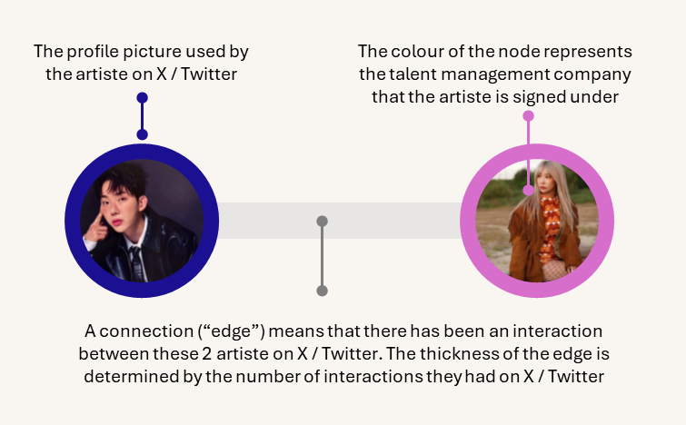

Summary:
This interactive visualization explores the Twitter network of selected K-pop celebrities, highlighting how they connect and interact online. Each node represents a K-pop celebrities, with node colors indicating the talent management company they are signed under.

Features:
Node Details: Hover over any node to view the celebrities' name, group affiliation (if applicable), and company.
Intuitive Navigation: Easily drag, drop, zoom in, and zoom out to explore the network from different perspectives.
Connection Discovery: Click on an celebrities to instantly reveal their immediate connections within the network.
Ariste Search: Use the search bar below to find a K-pop celebrity by their Twitter handle.
Highlighting Key Influencers: The most central and influential celebrities are visually emphasized with a distinctive yellow glow.
References:
Network Analysis: Handbook of Graphs and Networks in People Analytics by Keith McNulty. An online version of the book is available here.
List of Twitter Accounts of Kpop Celebrities: Scrapped from Allkpop Website
pleaserotate.js: Arscan